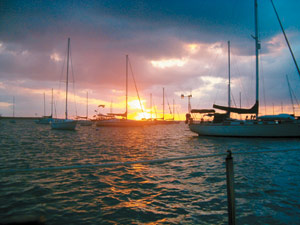
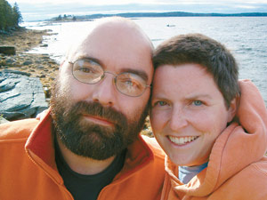
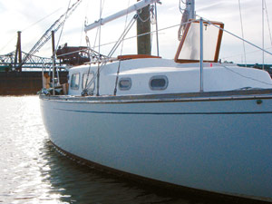
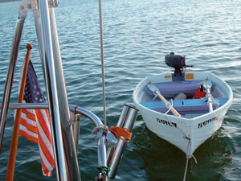
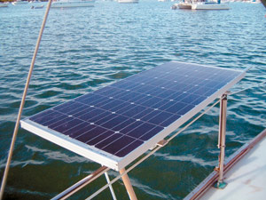
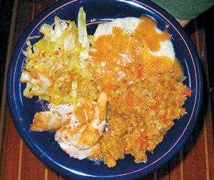
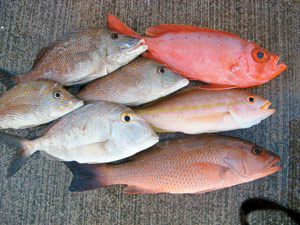
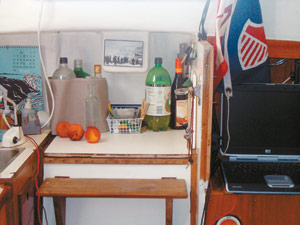
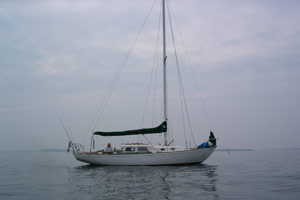

From Boston to the Florida Keys, we make our home on our 30-foot sailboat.
My husband, John, and I live aboard a sailboat currently anchored in Marathon, Fla. It’s easy to be self-sufficient on a small boat, and living on the water allows us to travel even with limited means. Like a turtle, we travel with our “shell,” which makes it possible for us to be at home anywhere.
John purchased this sailboat, called Rubicon, in 1999 for about $15,000. Rubicon was built 40 years ago in Ontario and is graceful in shape and forgiving when sailed. John is a boat captain, and he has worked on passenger ferries and on boats that service large tankers and other ships that come into port. He has responded to oil spills, ferried crews to and from larger boats, and transported supplies. He lived aboard Rubicon in Boston Harbor for several years before we met on Thompson Island, near Boston, where I was teaching sailing courses.
We both sailed as children - John on Cape Cod, and myself on Lake Lanier in Georgia. A few years ago, I also took a course with the National Outdoor Leadership School, where I learned to sail on a small, open boat in the Sea of Cortez. John and I both fell in love with sailboats because we think they are functional as well as beautiful. For a boat to sail well, it needs the long, classic lines we love in our own boat. A sailboat also can travel more cost effectively than a powerboat and make longer trips.
Sailboats come in many sizes and price ranges. We’ve read about young couples sailing around the world - with children - in boats smaller than ours. We’ve also encountered brand-new sailboats that have more amenities than many shore-side homes. Our Rubicon is 30 feet long and 8 feet wide, and falls toward the smaller, simpler end of the spectrum.
In April 2004, John and I moved onto Rubicon in Boston Harbor to save money for an extended adventure at sea. By living at the marina, we were able to maintain friendships and work full time, while preparing to cast our lines for new surroundings.
When we moved aboard, Boston was just beginning to thaw out from a long New England winter, but our marina already was filled with “live-aboards,” folks who reside on their boats year-round. In the coldest months, most stay warm by “shrink-wrapping” their boats with big sheets of plastic, which are heated to conform to the shape of the hull. When we arrived, most of our neighbors were still huddled in the confines of their plastic igloos. As they emerged, we discovered a remarkably diverse community, including a family who had sailed from Cuba 10 years before, and a family from Arkansas who shared our goal of sailing down the East Coast.
Our slip at the Quarterdeck Marina in Boston Harbor came with 30-amp AC power, which we used to run our television, a small refrigerator, lamps and a much-needed space heater. Our task over the next few months was to modify the boat for total self-sufficiency - electrically and otherwise.
A cruising sailboat is a comfortable home that can remain at sea for months. Although sailboats travel by wind power, many also have diesel engines. We set to work installing a brand-new, 30-horsepower diesel engine to replace the boat’s original gasoline engine. As part of the installation, we added a high-output alternator to charge an extensive battery bank, from which we draw all our DC power. Most boats, including ours, use small inverters to convert DC to AC, to run appliances such as computers, televisions and even microwaves. We rewired the boat to use power from the engine to run our essential “boat gear,” including a VHF radio, an autopilot system and a depth sounder, along with power for lighting and for a small inverter to run the computer. We also installed a diesel/kerosene heater, which runs off a fuel tank that we pressurize with a bicycle-tire pump. Our cabin lights are highly efficient fluorescent overhead lamps. For our toilet and sink, we decided to use hand pumps instead of electric models, and we agreed to keep our AM/FM radio and CD player, but leave our television behind when we set off for good. We bought a Coleman cooler so that we could use big blocks of ice to keep our food cold. A refrigerator was not an option because it would have required too much electricity and space.
A few months ago, we upgraded our electrical system again by installing two 85-watt solar panels, one on each side of the boat. Together, they supply all the electricity we need, so that we no longer have to run the diesel engine to power our electrical equipment, which saves wear and tear on the engine.
Our cabin is 8 feet wide and 20 feet long, and it contains all our possessions - which means we’re constantly discarding unnecessary items. Our priorities on the boat quickly became food, boat equipment, tools and books, including two dozen or so instruction manuals. We’ve also pared our wardrobe to the bare essentials, which means we carry plenty of rain gear, but not many dress clothes.
For cooking, we use a propane stove with two burners. We bake in a Dutch oven or on the outdoor grill - where we recently cooked a peach pie. We burn 2 pounds of propane a week, or about $4 in fuel. Without significant refrigeration, most of our food is either local produce, freshly caught fish, or canned and dried goods, such as beans, rice and pasta, but we have a spice cabinet to help keep meals interesting.
We store fresh water in a 20-gallon tank under our bunk, and we also carry four 5-gallon jerry cans to give us a reserve of water. Our manual-pump toilet uses seawater to flush into a holding tank. Our kitchen sink has two hand pumps: one for saltwater to give dishes a first rinse, and another for fresh water to give them a final rinse. At the Boston marina, we had access to water on the dock; when we are sailing, we can go 10 days or more on the 40 gallons we carry. That breaks down to 2 gallons per person for each day, which is the common figure used when provisioning for a hiking or camping trip. Eventually, we would like to be able to take care of all our laundry and bathing needs on the boat. With that in mind, we plan to develop a system for collecting rainwater. We’ve seen many methods, from PVC pipes acting as rain gutters to the ever-practical 5-gallon bucket set out on the deck.
We left Boston on Nov. 7, 2004, and spent the better part of six weeks traveling to Beaufort, S.C., where we took a break for Christmas. Then we continued on to the Florida Keys, arriving at the end of January. Our route was down to the Cape Cod Canal, through Buzzards Bay, Block Island Sound and Long Island Sound to New York City, then out to the Atlantic, where we hugged the coasts of New Jersey, Delaware and Maryland until we could join the Intracoastal Waterway (ICW) in Norfolk, Va.
From there, the ICW took us south all the way to Miami, where we were finally warm after 2,000 miles of travel. Our routine was to sail about 50 miles a day, though we were able to do two overnight passages when the weather was good. It is a trip done annually by thousands of sailing “snowbirds,” who migrate south with the winter and north with the summer. By leaving late in the season, we avoided much of the traffic on what is essentially a mariner’s coastal highway.
Just as in Boston, we are experiencing the best of both worlds here in the Florida Keys. We have civilization at our fingertips. Using our 8-foot dinghy - which is powered either by rowing or its 3.3-horsepower outboard engine - we can go ashore for showers, laundry, boat parts, food and, of course, cold beer. On the boat, we can spend uninterrupted hours reading, writing and doing boat maintenance. When we’re not working day jobs, we live frugally so that we can spend more days exploring before stopping to find gainful employment. I’ve taken a number of different jobs, from a tour guide aboard a “duck” boat in Boston, to my present position at the Outward Bound school in Key Largo. Here, I work as coordinator of food, gear and transportation for outdoor courses in the Everglades and central Florida.
This is the way about half of the cruising community gets by - working to replenish the cruising kitty, then cruising for months, if not years, before working again. The other half are folks who have spent their lives at a job and now have significant retirement benefits that allow them to cruise continuously for long periods of time. These folks tend to have bigger boats, as many sold their homes to begin cruising. We know that in 10 or 20 years we will crave a few more creature comforts, too, but we see this time in our lives as a window of opportunity. With a little ingenuity, we can travel almost anywhere. Right now, we are planning a number of extended trips. We would like to go to Central America and through the Panama Canal, and eventually to New Zealand, Australia and the Mediterranean.
We are proud to be off the grid, and intend, someday, to return to a small, undeveloped piece of land we recently purchased on the Maine coast. Even if we don’t apply all of our current systems and values to a landlocked home, we know this experience will make it easier to live in rural Maine. It is a simple life - the cruising life - but a fulfilling one, as any harbor can be our harbor. We are off the grid, but near the grid, living lightly and economically, and free to see the world.
- For more about Ellen and John Landrum’s sailing adventures, visit Ellen’s Web log.
|
 Courtesy Ellen and John Landrum The sunset view from Rubicon, at anchor in Key Biscayne, Fla. |
 Courtesy Ellen and John Landrum Ellen and John Landrum. |
 Courtesy Ellen and John Landrum The Landrum's sailboat, Rubicon, at the Quarterdeck Marina in Boston Harbor. |
|
 Courtesy Ellen and John Landrum Ellen and John's "SUV," or Sailing Utility Vessel. They use this dinghy to make from the anchored Rubicon to shore. |
 Courtesy Ellen and John Landrum One of the two 85-watt solar panels that provide electricity for the boat. |
 Courtesy Ellen and John Landrum Thanksgiving dinner cooked on the boat's two-burner stove. |
|
 Courtesy Ellen and John Landrum Just another dinner in the Florida Keys. |
 Courtesy Ellen and John Landrum The sailboat's tiny kitchen. |
 Courtesy Ellen and John Landrum John and Ellen Landrum's sailboat, Rubicon. |